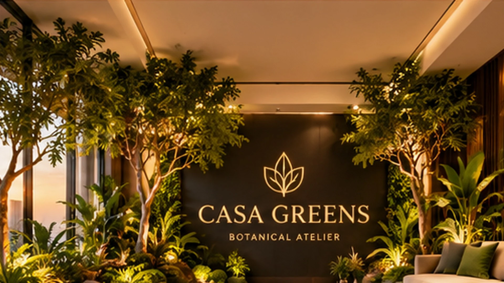
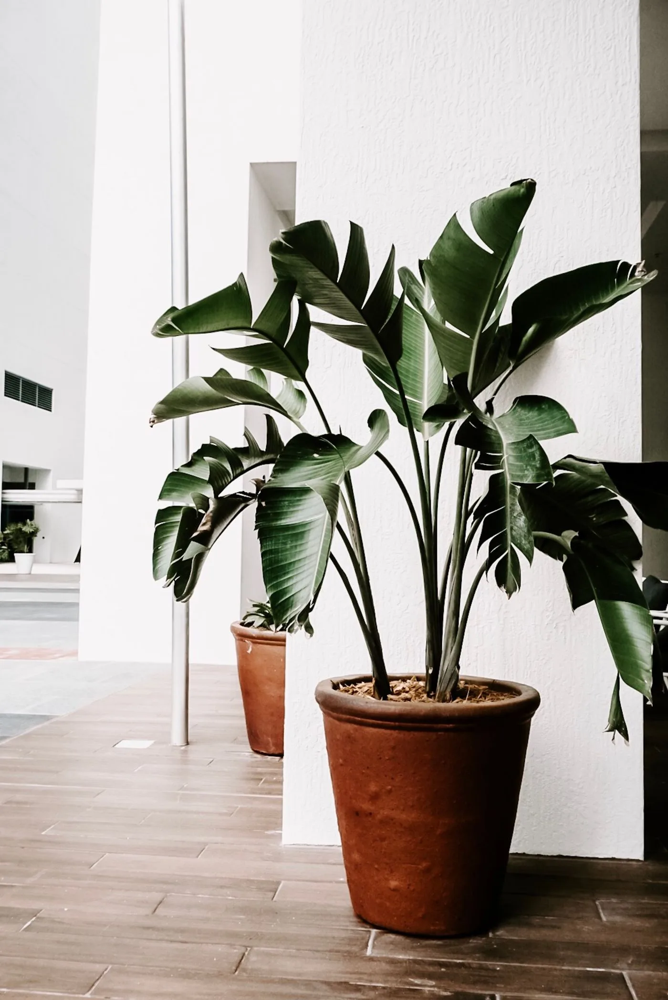

Thoughtful design
We consider the room, its light, proportions and mood before suggesting greenery.
Casa Greens brings artificial plants, decorative planters and professional indoor greenery solutions together under one roof.

Casa Greens is an artificial greenery products and solutions brand. Our range spans indoor plants, statement trees, hanging foliage, decorative planters, green wall panels and customized botanical arrangements.
Alongside products, we offer indoor garden design, green wall installation, vertical garden design and artificial landscaping for homes, offices and commercial interiors. Start with a product enquiry or let us help shape a complete green space.
Discover our product range ↗A sculptural tree beside a favourite chair. Soft trailing foliage above a busy workspace. A richly layered wall that becomes the heart of a room.
We bring these elements together with lifelike artificial foliage, balancing a natural look with the architecture and character of your interior.
Explore our design services ↗

We consider the room, its light, proportions and mood before suggesting greenery.
Discuss foliage combinations, planter styling and custom arrangements. For larger orders, share your setting and quantities so we can consider the whole space.
Explore the product range or discuss a complete design and installation service. We help connect your selection with the setting you have in mind.